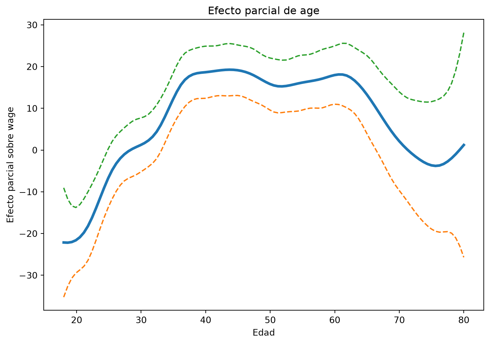
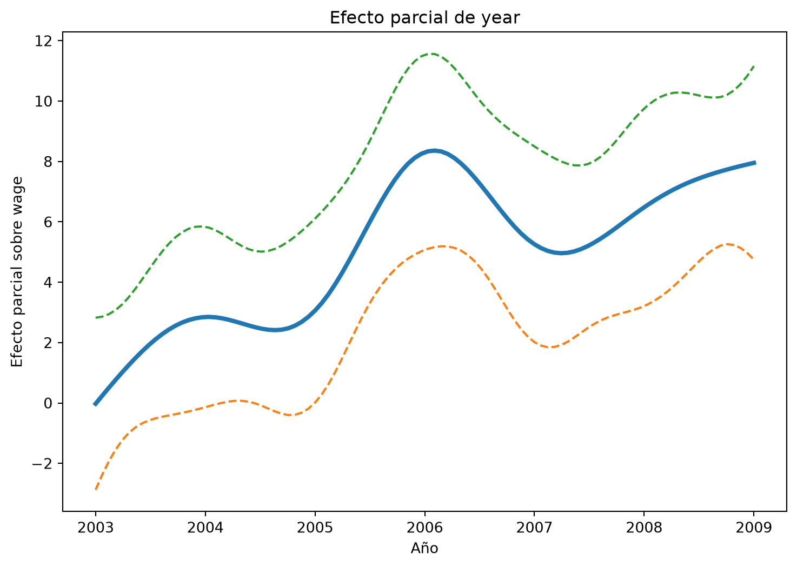
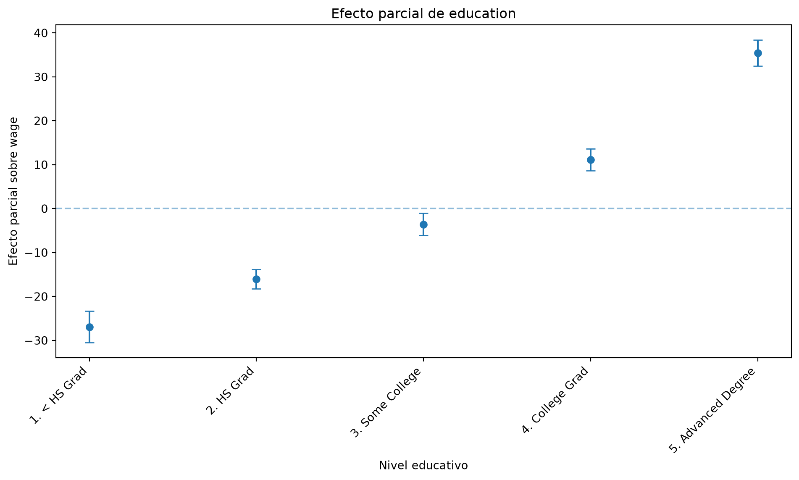
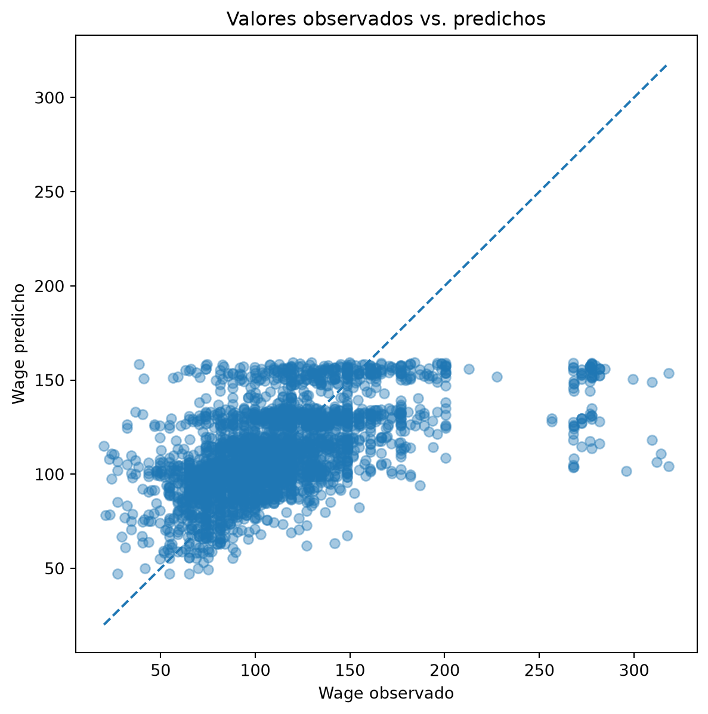
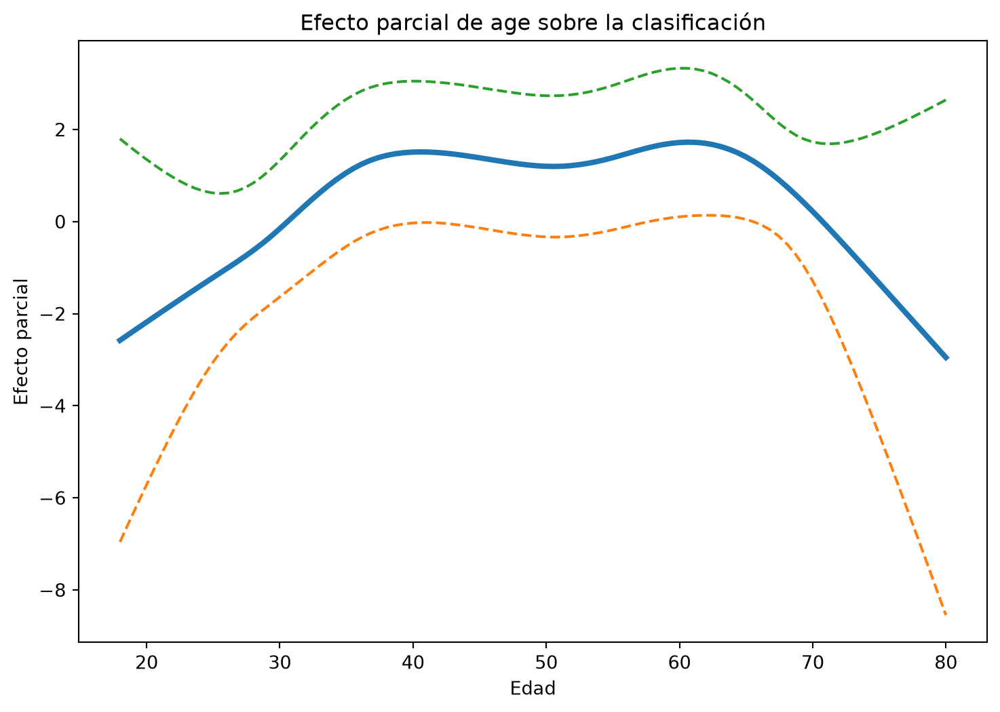

Código
import numpy as np
import pandas as pd
import matplotlib.pyplot as plt
from ISLP import load_data
from pygam import LinearGAM, LogisticGAM, s, l, fHasta ahora hemos estudiado diferentes maneras de introducir no linealidad cuando tenemos una variable predictora.
Entre ellas:
Los Modelos Aditivos Generalizados, o GAMs, permiten extender estas ideas al caso en el que tenemos varias variables predictoras.
La idea fundamental es reemplazar los términos lineales de una regresión múltiple por funciones flexibles.
En una regresión lineal múltiple tenemos
\[Y_i = \beta_0 + \beta_1X_{i1} + \beta_2X_{i2} +\cdots+ \beta_pX_{ip} + \varepsilon_i.\]
En un GAM escribimos
\[Y_i = \beta_0 + f_1(X_{i1}) + f_2(X_{i2}) +\cdots+ f_p(X_{ip}) + \varepsilon_i.\]
Cada función \(f_j\) puede tener una forma diferente.
📝 Diapositivas
Utilizaremos nuevamente el conjunto de datos Wage.
import numpy as np
import pandas as pd
import matplotlib.pyplot as plt
from ISLP import load_data
from pygam import LinearGAM, LogisticGAM, s, l, fCargamos los datos.
Wage = load_data("Wage")Revisamos las primeras observaciones.
Wage.head()| year | age | maritl | race | education | region | jobclass | health | health_ins | logwage | wage | |
|---|---|---|---|---|---|---|---|---|---|---|---|
| 0 | 2006 | 18 | 1. Never Married | 1. White | 1. < HS Grad | 2. Middle Atlantic | 1. Industrial | 1. <=Good | 2. No | 4.318063 | 75.043154 |
| 1 | 2004 | 24 | 1. Never Married | 1. White | 4. College Grad | 2. Middle Atlantic | 2. Information | 2. >=Very Good | 2. No | 4.255273 | 70.476020 |
| 2 | 2003 | 45 | 2. Married | 1. White | 3. Some College | 2. Middle Atlantic | 1. Industrial | 1. <=Good | 1. Yes | 4.875061 | 130.982177 |
| 3 | 2003 | 43 | 2. Married | 3. Asian | 4. College Grad | 2. Middle Atlantic | 2. Information | 2. >=Very Good | 1. Yes | 5.041393 | 154.685293 |
| 4 | 2005 | 50 | 4. Divorced | 1. White | 2. HS Grad | 2. Middle Atlantic | 2. Information | 1. <=Good | 1. Yes | 4.318063 | 75.043154 |
Nos interesarán principalmente:
age: edad;year: año;education: nivel educativo;wage: salario.pygam espera que la matriz de predictores sea bidimensional.
Además, para una variable categórica como education, necesitamos una representación numérica.
Primero revisamos sus categorías.
Wage["education"].cat.categoriesIndex(['1. < HS Grad', '2. HS Grad', '3. Some College', '4. College Grad',
'5. Advanced Degree'],
dtype='object')Podemos obtener códigos enteros con:
education_code = Wage["education"].cat.codesConstruimos la matriz de predictores.
X = np.column_stack([
Wage["age"],
Wage["year"],
education_code
])
y = Wage["wage"].to_numpy()Revisamos las dimensiones.
X.shape(3000, 3)La matriz tiene tres columnas:
\[X_1=\text{age}, \qquad X_2=\text{year}, \qquad X_3=\text{education}.\]
Consideremos el modelo
\[\text{wage} = \beta_0 + f_1(\text{age}) + f_2(\text{year}) + f_3(\text{education}) + \varepsilon.\]
Utilizaremos:
age;year;education.En pygam podemos escribir:
gam = LinearGAM(
s(0) +
s(1) +
f(2)
)Aquí:
s(0) aplica un suavizador a la primera columna;s(1) aplica un suavizador a la segunda columna;f(2) trata la tercera columna como una variable categórica.Ajustamos el modelo.
gam.fit(X, y)LinearGAM(callbacks=[Deviance(), Diffs()], fit_intercept=True,
max_iter=100, scale=None, terms=s(0) + s(1) + f(2) + intercept,
tol=0.0001, verbose=False)Nuestro modelo tiene la forma
\[\hat y = \hat\beta_0 + \hat f_1(\text{age}) + \hat f_2(\text{year}) + \hat f_3(\text{education}).\]
Esto significa que la predicción se construye sumando contribuciones separadas.
Por ejemplo:
\[\hat y = \text{intercepto} + \text{efecto de age} + \text{efecto de year} + \text{efecto de education}.\]
La palabra aditivo proviene precisamente de esta estructura.
ageUna de las principales ventajas de los GAMs es que podemos examinar el efecto de cada predictor por separado.
Construimos una malla para el término correspondiente a age.
XX = gam.generate_X_grid(
term=0
)Calculamos el efecto parcial.
partial_age = gam.partial_dependence(
term=0,
X=XX
)También podemos obtener intervalos de confianza.
pdep_age, confi_age = gam.partial_dependence(
term=0,
X=XX,
width=0.95
)Visualizamos el efecto.
plt.figure(figsize=(9, 6))
plt.plot(
XX[:, 0],
pdep_age,
linewidth=3
)
plt.plot(
XX[:, 0],
confi_age[:, 0],
linestyle="--"
)
plt.plot(
XX[:, 0],
confi_age[:, 1],
linestyle="--"
)
plt.xlabel("Edad")
plt.ylabel("Efecto parcial sobre wage")
plt.title("Efecto parcial de age")
plt.show()
La curva representa la contribución estimada de age al salario.
No representa directamente el salario esperado.
Representa
\[\hat f_1(\text{age}),\]
es decir, la contribución de la edad después de considerar simultáneamente los demás términos del modelo.
Un valor positivo de \(\hat f_1(\text{age})\) indica que esa edad contribuye a aumentar la predicción respecto al nivel promedio del modelo.
Un valor negativo indica una contribución en sentido contrario.
yearRepetimos el procedimiento para year.
XX_year = gam.generate_X_grid(
term=1
)pdep_year, confi_year = gam.partial_dependence(
term=1,
X=XX_year,
width=0.95
)plt.figure(figsize=(9, 6))
plt.plot(
XX_year[:, 1],
pdep_year,
linewidth=3
)
plt.plot(
XX_year[:, 1],
confi_year[:, 0],
linestyle="--"
)
plt.plot(
XX_year[:, 1],
confi_year[:, 1],
linestyle="--"
)
plt.xlabel("Año")
plt.ylabel("Efecto parcial sobre wage")
plt.title("Efecto parcial de year")
plt.show()
El término
f(2)corresponde a education.
A diferencia de age y year, education no es una variable continua. Por tanto, no queremos construir una curva sobre una malla de muchos valores.
Queremos estimar una contribución para cada nivel educativo.
Primero revisamos las categorías.
education_levels = Wage["education"].cat.categories
education_levelsIndex(['1. < HS Grad', '2. HS Grad', '3. Some College', '4. College Grad',
'5. Advanced Degree'],
dtype='object')Recordemos que pygam trabaja con los códigos numéricos de estas categorías:
education_codes = np.arange(len(education_levels))
education_codesarray([0, 1, 2, 3, 4])Ahora construiremos una matriz con una fila para cada nivel educativo.
Mantendremos age y year en valores representativos y cambiaremos únicamente education.
X_education = np.column_stack([
np.repeat(Wage["age"].mean(), len(education_levels)),
np.repeat(Wage["year"].mean(), len(education_levels)),
education_codes
])Podemos revisar la matriz.
X_educationarray([[4.24146667e+01, 2.00579100e+03, 0.00000000e+00],
[4.24146667e+01, 2.00579100e+03, 1.00000000e+00],
[4.24146667e+01, 2.00579100e+03, 2.00000000e+00],
[4.24146667e+01, 2.00579100e+03, 3.00000000e+00],
[4.24146667e+01, 2.00579100e+03, 4.00000000e+00]])Cada fila corresponde a un nivel educativo distinto, mientras que age y year permanecen constantes.
Calculamos ahora el efecto parcial del término categórico.
pdep_education, confi_education = gam.partial_dependence(
term=2,
X=X_education,
width=0.95
)Podemos revisar los resultados.
pdep_educationarray([-26.92229485, -16.06307378, -3.59223096, 11.15276953,
35.42483245])Ahora tenemos exactamente un valor por cada nivel educativo.
len(education_levels), len(pdep_education)(5, 5)Representamos las contribuciones.
plt.figure(figsize=(10, 6))
x_pos = np.arange(len(education_levels))
plt.errorbar(
x_pos,
pdep_education,
yerr=[
pdep_education - confi_education[:, 0],
confi_education[:, 1] - pdep_education
],
fmt="o",
capsize=4
)
plt.axhline(
y=0,
linestyle="--",
alpha=0.5
)
plt.xticks(
x_pos,
education_levels,
rotation=45,
ha="right"
)
plt.xlabel("Nivel educativo")
plt.ylabel("Efecto parcial sobre wage")
plt.title("Efecto parcial de education")
plt.tight_layout()
plt.show()
Cada punto representa la contribución estimada de un nivel educativo al modelo.
Es decir, estamos visualizando
\[\hat f_3(\text{education}).\]
Un valor mayor indica una contribución más positiva a la predicción de wage, una vez considerados simultáneamente los efectos de age y year.
El eje vertical representa el efecto parcial, no el salario predicho directamente.
El salario estimado completo se obtiene sumando
\[\hat y = \hat\beta_0 + \hat f_1(\text{age}) + \hat f_2(\text{year}) + \hat f_3(\text{education}).\]
Recordemos que el modelo es
\[\hat y = \hat\beta_0 + \hat f_1(\text{age}) + \hat f_2(\text{year}) + \hat f_3(\text{education}).\]
Supongamos conceptualmente que para una persona obtenemos
\[\hat\beta_0=100,\]
\[\hat f_1(\text{age})=15,\]
\[\hat f_2(\text{year})=5,\]
\[\hat f_3(\text{education})=20.\]
Entonces
\[\hat y = 100+15+5+20 = 140.\]
Cada término aporta una contribución separada.
Una vez ajustado el modelo podemos hacer predicciones.
y_hat = gam.predict(X)Podemos comparar valores observados y predichos.
plt.figure(figsize=(7, 7))
plt.scatter(
y,
y_hat,
alpha=0.4
)
min_val = min(y.min(), y_hat.min())
max_val = max(y.max(), y_hat.max())
plt.plot(
[min_val, max_val],
[min_val, max_val],
linestyle="--"
)
plt.xlabel("Wage observado")
plt.ylabel("Wage predicho")
plt.title("Valores observados vs. predichos")
plt.show()
Si las predicciones fueran perfectas, todos los puntos caerían sobre la diagonal.
Un GAM no obliga a que todos los predictores sean suavizados.
Podemos combinar términos lineales y no lineales.
Por ejemplo,
\[\text{wage} = \beta_0 + f_1(\text{age}) + \beta_2\text{year} + f_3(\text{education}) + \varepsilon.\]
En pygam:
gam_year_linear = LinearGAM(
s(0) +
l(1) +
f(2)
)Ajustamos el modelo.
gam_year_linear.fit(X, y)LinearGAM(callbacks=[Deviance(), Diffs()], fit_intercept=True,
max_iter=100, scale=None, terms=s(0) + l(1) + f(2) + intercept,
tol=0.0001, verbose=False)Ahora age sigue teniendo una relación flexible, pero year entra linealmente.
yearPodemos comparar tres posibilidades.
year\[\text{wage} = \beta_0 + f_1(\text{age}) + f_3(\text{education}) + \varepsilon.\]
gam_no_year = LinearGAM(
s(0) +
f(2)
)
gam_no_year.fit(X, y)LinearGAM(callbacks=[Deviance(), Diffs()], fit_intercept=True,
max_iter=100, scale=None, terms=s(0) + f(2) + intercept,
tol=0.0001, verbose=False)year lineal\[\text{wage} = \beta_0 + f_1(\text{age}) + \beta_2\text{year} + f_3(\text{education}) + \varepsilon.\]
gam_year_linear = LinearGAM(
s(0) +
l(1) +
f(2)
)
gam_year_linear.fit(X, y)LinearGAM(callbacks=[Deviance(), Diffs()], fit_intercept=True,
max_iter=100, scale=None, terms=s(0) + l(1) + f(2) + intercept,
tol=0.0001, verbose=False)year suavizado\[\text{wage} = \beta_0 + f_1(\text{age}) + f_2(\text{year}) + f_3(\text{education}) + \varepsilon.\]
gam_year_smooth = LinearGAM(
s(0) +
s(1) +
f(2)
)
gam_year_smooth.fit(X, y)LinearGAM(callbacks=[Deviance(), Diffs()], fit_intercept=True,
max_iter=100, scale=None, terms=s(0) + s(1) + f(2) + intercept,
tol=0.0001, verbose=False)Podemos comparar la calidad de ajuste utilizando criterios como AIC.
comparison = pd.DataFrame({
"Modelo": [
"Sin year",
"Year lineal",
"Year suavizado"
],
"AIC": [
gam_no_year.statistics_["AIC"],
gam_year_linear.statistics_["AIC"],
gam_year_smooth.statistics_["AIC"]
]
})
comparison| Modelo | AIC | |
|---|---|---|
| 0 | Sin year | 29909.314049 |
| 1 | Year lineal | 29896.527082 |
| 2 | Year suavizado | 29901.488680 |
Recordemos que, en términos generales, un AIC más pequeño indica un mejor compromiso entre ajuste y complejidad.
En el libro se comparan modelos mediante pruebas tipo ANOVA.
La idea conceptual es muy importante:
podemos comparar modelos anidados para evaluar si un predictor
Conceptualmente podemos comparar
\[M_1: \quad Y = \beta_0 + f_1(X_1) + f_3(X_3) + \varepsilon,\]
contra
\[M_2: \quad Y = \beta_0 + f_1(X_1) + \beta_2X_2 + f_3(X_3) + \varepsilon,\]
y posteriormente contra
\[M_3: \quad Y = \beta_0 + f_1(X_1) + f_2(X_2) + f_3(X_3) + \varepsilon.\]
La primera pregunta:
La segunda pregunta:
Nosotros utilizaremos principalmente criterios de ajuste y visualización, pero la lógica de comparación de modelos es la misma.
age?Podemos hacer exactamente el mismo razonamiento para age.
Consideremos:
\[M_1: \quad \text{sin age},\]
\[M_2: \quad \text{age lineal},\]
\[M_3: \quad \text{age suavizado}.\]
gam_no_age = LinearGAM(
s(1) +
f(2)
).fit(X, y)
gam_age_linear = LinearGAM(
l(0) +
s(1) +
f(2)
).fit(X, y)
gam_age_smooth = LinearGAM(
s(0) +
s(1) +
f(2)
).fit(X, y)Comparamos.
comparison_age = pd.DataFrame({
"Modelo": [
"Sin age",
"Age lineal",
"Age suavizado"
],
"AIC": [
gam_no_age.statistics_["AIC"],
gam_age_linear.statistics_["AIC"],
gam_age_smooth.statistics_["AIC"]
]
})
comparison_age| Modelo | AIC | |
|---|---|---|
| 0 | Sin age | 30102.851940 |
| 1 | Age lineal | 30008.942864 |
| 2 | Age suavizado | 29901.488680 |
Los GAMs también pueden utilizarse cuando la respuesta es binaria.
Construiremos una variable que indique si el salario es superior a 250.
high_earn = (
Wage["wage"] > 250
).astype(int)Podemos revisar la frecuencia de ambas clases.
high_earn.value_counts()wage
0 2921
1 79
Name: count, dtype: int64Nuestro objetivo es modelar
\[P( \text{wage}>250 \mid \text{age}, \text{year}, \text{education} ).\]
En regresión logística tradicional tenemos
\[\log \left( \frac{p(X)}{1-p(X)} \right) = \beta_0 + \beta_1X_1 +\cdots+ \beta_pX_p.\]
En un GAM logístico reemplazamos algunos términos lineales por funciones flexibles:
\[\log \left( \frac{p(X)}{1-p(X)} \right) = \beta_0 + f_1(X_1) + f_2(X_2) +\cdots+ f_p(X_p).\]
Ajustamos:
gam_logit = LogisticGAM(
s(0) +
s(1) +
f(2)
)gam_logit.fit(
X,
high_earn
)LogisticGAM(callbacks=[Deviance(), Diffs(), Accuracy()],
fit_intercept=True, max_iter=100,
terms=s(0) + s(1) + f(2) + intercept, tol=0.0001, verbose=False)Antes de interpretar el modelo, conviene revisar la relación entre education y la respuesta.
pd.crosstab(
Wage["education"],
high_earn
)| wage | 0 | 1 |
|---|---|---|
| education | ||
| 1. < HS Grad | 268 | 0 |
| 2. HS Grad | 966 | 5 |
| 3. Some College | 643 | 7 |
| 4. College Grad | 663 | 22 |
| 5. Advanced Degree | 381 | 45 |
Puede ocurrir que alguna categoría no contenga observaciones de una de las clases.
Por ejemplo, si en un determinado nivel educativo no existen individuos con
\[\text{wage}>250,\]
el modelo puede tener dificultades para estimar adecuadamente el efecto de esa categoría.
Este fenómeno está relacionado con problemas de separación en modelos logísticos.
Para evitar ese problema podemos excluir una categoría sin observaciones positivas.
mask = (
Wage["education"] !=
Wage["education"].cat.categories[0]
)
Wage_sub = Wage.loc[mask].copy()Reconstruimos las variables.
education_sub = (
Wage_sub["education"]
.cat.remove_unused_categories()
.cat.codes
)
X_sub = np.column_stack([
Wage_sub["age"],
Wage_sub["year"],
education_sub
])
high_earn_sub = (
Wage_sub["wage"] > 250
).astype(int)Ajustamos nuevamente.
gam_logit_sub = LogisticGAM(
s(0) +
s(1) +
f(2)
)
gam_logit_sub.fit(
X_sub,
high_earn_sub
)LogisticGAM(callbacks=[Deviance(), Diffs(), Accuracy()],
fit_intercept=True, max_iter=100,
terms=s(0) + s(1) + f(2) + intercept, tol=0.0001, verbose=False)age en clasificaciónXX_age_logit = gam_logit_sub.generate_X_grid(
term=0
)
pdep_age_logit, confi_age_logit = gam_logit_sub.partial_dependence(
term=0,
X=XX_age_logit,
width=0.95
)plt.figure(figsize=(9, 6))
plt.plot(
XX_age_logit[:, 0],
pdep_age_logit,
linewidth=3
)
plt.plot(
XX_age_logit[:, 0],
confi_age_logit[:, 0],
linestyle="--"
)
plt.plot(
XX_age_logit[:, 0],
confi_age_logit[:, 1],
linestyle="--"
)
plt.xlabel("Edad")
plt.ylabel("Efecto parcial")
plt.title(
"Efecto parcial de age sobre la clasificación"
)
plt.show()
En un GAM logístico, el eje vertical no representa directamente una probabilidad.
La función contribuye a
\[\log \left( \frac{p}{1-p} \right).\]
Por tanto, debemos interpretar principalmente la forma de la curva:
Podemos obtener probabilidades directamente con:
probabilities = gam_logit_sub.predict_proba(
X_sub
)Revisamos algunas.
probabilities[:10]array([0.00272505, 0.01373062, 0.0388806 , 0.00466125, 0.0404958 ,
0.01666138, 0.00361536, 0.02211939, 0.00703292, 0.01439082])Estas sí corresponden a valores entre 0 y 1.
También podemos producir clases predichas.
predicted_class = gam_logit_sub.predict(
X_sub
)Podemos construir una tabla de contingencia.
pd.crosstab(
high_earn_sub,
predicted_class,
rownames=["Real"],
colnames=["Predicho"]
)| Predicho | False |
|---|---|
| Real | |
| 0 | 2653 |
| 1 | 79 |
Consideremos nuevamente el modelo
\[Y = \beta_0 + f_1(X_1) + f_2(X_2) + f_3(X_3) + \varepsilon.\]
Un GAM nos permite:
Esta combinación de flexibilidad e interpretabilidad es una de sus principales ventajas.
El GAM que hemos utilizado supone que
\[\hat Y = \hat\beta_0 + \hat f_1(X_1) + \hat f_2(X_2) + \hat f_3(X_3).\]
Esto implica que el efecto de una variable se suma al de las demás.
Por ejemplo, el efecto de age no cambia dependiendo de year.
Sin embargo, puede existir una interacción:
\[f_{12}(X_1,X_2).\]
En ese caso podríamos utilizar modelos más complejos.
Por ahora nos concentraremos en modelos aditivos.
Ajusta el modelo
\[\text{wage} = \beta_0 + f_1(\text{age}) + f_2(\text{year}) + f_3(\text{education}) + \varepsilon.\]
Construye las tres gráficas de efectos parciales.
Describe la forma de cada efecto.
Responde:
year parece lineal?age lineal vs. no linealAjusta dos modelos:
\[M_1: \quad \text{wage} = \beta_0 + \beta_1\text{age} + f_2(\text{year}) + f_3(\text{education}) + \varepsilon,\]
y
\[M_2: \quad \text{wage} = \beta_0 + f_1(\text{age}) + f_2(\text{year}) + f_3(\text{education}) + \varepsilon.\]
Compara los modelos utilizando AIC.
¿Cuál prefieres?
year lineal vs. no linealRepite el ejercicio anterior para year.
Compara:
\[\beta_2\text{year}\]
contra
\[f_2(\text{year}).\]
¿Hay evidencia práctica de que necesitemos un efecto no lineal?
Ajusta una regresión lineal múltiple utilizando:
age;year;education.Después ajusta el GAM correspondiente.
Compara:
Construye la variable
\[Y= I(\text{wage}>200).\]
Ajusta un GAM logístico utilizando:
age;year;education.Construye las gráficas de efectos parciales.
¿Cambian las conclusiones respecto al modelo que utiliza el umbral 250?
Explica con tus propias palabras la diferencia entre
\[Y = \beta_0 + \beta_1X_1 + \beta_2X_2 + \varepsilon\]
y
\[Y = \beta_0 + f_1(X_1) + f_2(X_2) + \varepsilon.\]
Tu explicación debe mencionar: